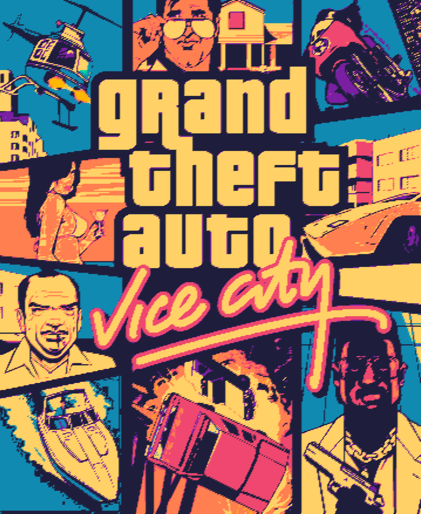
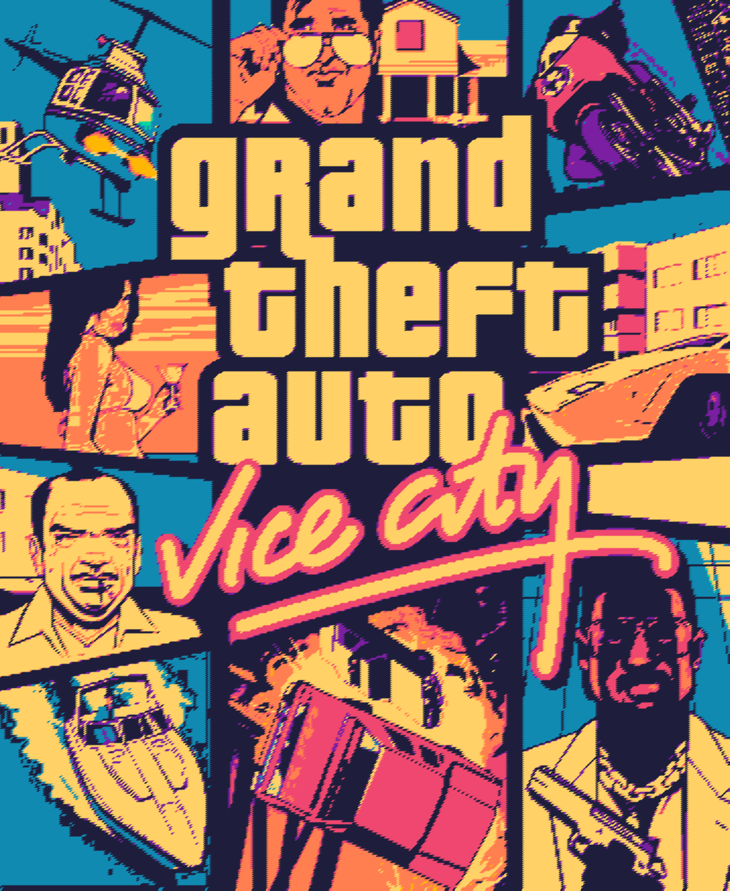
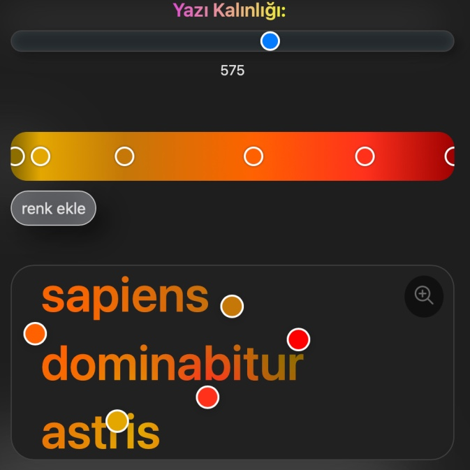
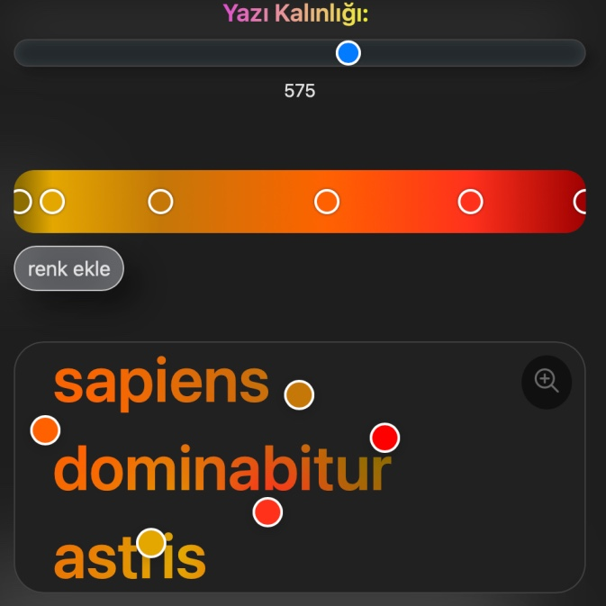

this is where technovision lives. in just 10 frames, i explore works, products, and remarkable ideas — especially those born from the world of computer science.
there’s also another section called “icontech,” where we remember the visionary minds who built this world — von neumann, ada, shannon, bush, and many others.
looking at my posts from past to present, it’s almost a design journey of my own. at first, there were barely any boundaries, and the layout followed a straightforward line. eventually, i grew tired of that and slowly started to discover my own visual language.
as i moved closer to the present, i began shaping softer corners, glassy containers, calm gradient tones, and shadows that felt right for the content.
in short, i finally arrived at a style that doesn’t tire the eye and gently invites exploration.
this section matters a lot to me — it’s a vast and dynamic world that fascinates me, and here, i get to reflect it entirely through my own taste.
to see all these things in their true colors, you can visit
my instagram page.


 



 
